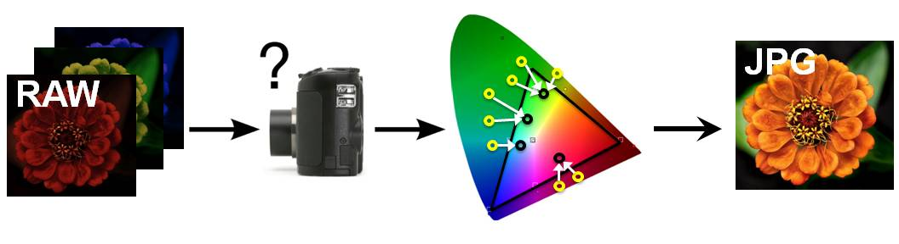

PROBABILISTIC COLOR DE-RENDERING
Most images found on the internet are produced by consumer digital cameras, which use tone-mapping to create compact, narrow-gamut images that are nonetheless visually pleasing. Unfortunately, in doing so, consumer cameras discard or distort substantial radiometric signal that could otherwise be used for many computer vision applications that rely on accurate measurements of scene colors: multi-view 3D reconstruction, photometric stereo, denoising, and many more. Existing methods attempt to undo these effects through deterministic maps that de-render the reported narrow-gamut colors (JPG) back to their original wide-gamut sensor measurements (RAW). Deterministic approaches are unreliable, however, because the cameras' wide-to-narrow mapping is often many-to-one, as shown in the figure below (yellow dots=wide-gamut colors, black dots=narrow gamut colors):
Thereverse mapping is thus one-to-many and has inherent uncertainty and loss of information. Our solution is to use probabilistic maps, rather than deterministic ones, providing uncertainty estimates useful to many applications. In Xiong et al. we used a non-parametric Bayesian regression technique---local Gaussian process regression---to predict for each pixel's narrow-gamut color a probability distribution over the scene colors that could have created it, described by a Gaussian distribution with a mean and variance:

Using a variety of consumer cameras we show that these distributions, once learned from training data, are effective in simple probabilistic adaptations of two popular applications: multi-exposure imaging and photometric stereo. Our results on these applications are better than those of corresponding deterministic approaches, especially for saturated and out-of-gamut colors.
Papers:
Y. Xiong, K. Saenko, T. Zickler, T. Darrell, "From Pixels to Physics: Probabilistic
Color De-rendering", in Proc. IEEE Conference on Computer Vision and
Pattern Recognition (CVPR), 2012.